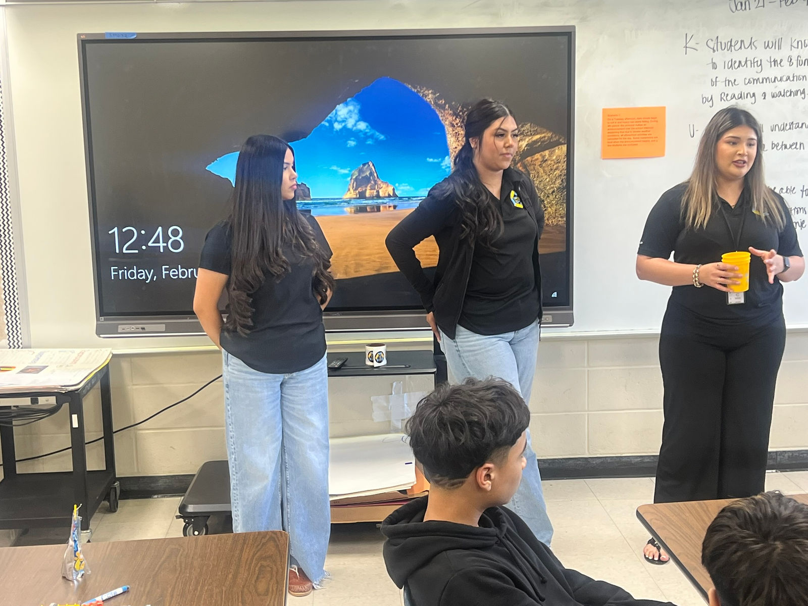
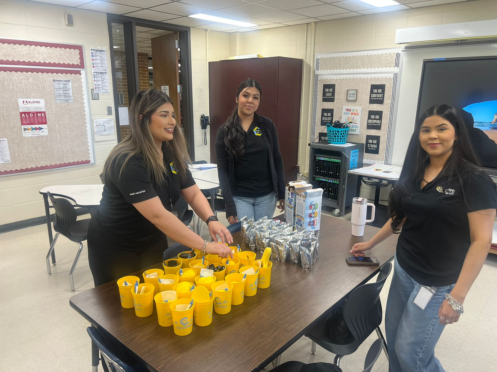
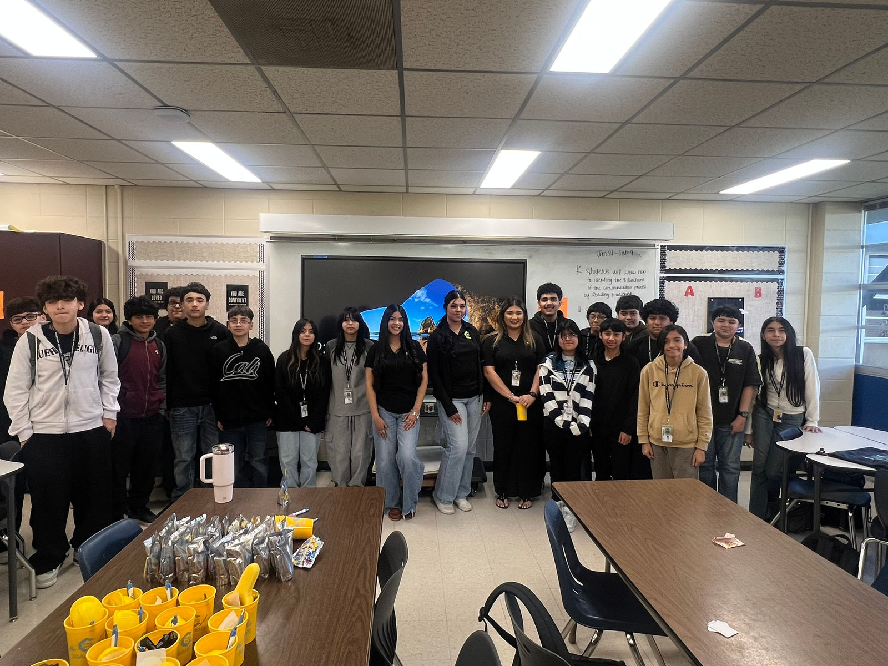

Blanson SkillsUSA Students Return to Grantham

Blanson SkillsUSA Students Return to Grantham to Champion the Future
Blanson CTE High School SkillsUSA members Raisa, Nalley, and Angie recently returned to Grantham Middle School to host a Lunch & Learn event introducing students to Career and Technical Education opportunities at Blanson.
The visit held special significance for Raisa, who previously attended Grantham Middle School. Wanting to give back to the campus that helped shape her academic journey, Raisa helped lead the event and even reconnected with one of her former teachers--highlighting the powerful impact of CTE pathways and student leadership.
During the Lunch & Learn, the students shared what future Blanson students can expect when they walk the halls of Blanson CTE High School. They discussed coursework, industry certifications, leadership development through SkillsUSA, and real-world career opportunities within the Distribution and Logistics program. Grantham students were able to ask questions and hear firsthand how CTE prepares students for college, careers, and leadership.
The event aligned with the 2025--2026 SkillsUSA theme, "Champion Your Future," as Raisa, Nalley, and Angie served as ambassadors for both Blanson and Career & Technical Education. Their professionalism and authenticity demonstrated how students can take ownership of their futures while guiding others toward meaningful opportunities.
Through initiatives like this Lunch & Learn, Blanson SkillsUSA continues to strengthen the pipeline between middle school and high school--ensuring students enter Blanson informed, confident, and ready to succeed.


Filed under SkillsUSA